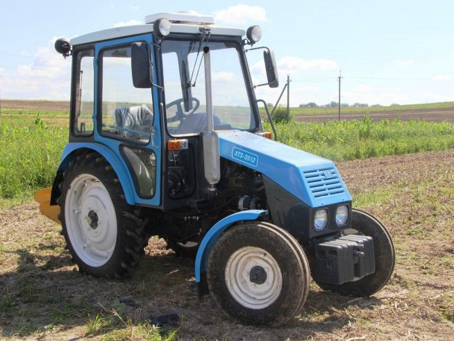

ХТЗ-3512

ХТЗ-3512 – це компактний та економічний трактор малої потужності, розроблений Харківським тракторним заводом для роботи в невеликих фермерських господарствах, садах, виноградниках та в комунальній сфері. Відрізняється простотою конструкції та низькими витратами пального. Завдяки невеликим габаритам і малому радіусу розвороту, трактор ідеально підходить для маневрування в обмеженому просторі.
Незважаючи на компактність, модель має повноцінну кабіну з опаленням та вентиляцією, що забезпечує комфорт оператора в будь-яку погоду. Трактор обладнаний механічною трансмісією, а також задньою гідронавісною системою вантажопідйомністю до 600 кг. Це дозволяє використовувати його з широким спектром знарядь: від легких плугів і культиваторів до косарок, причепів та комунальних щіток.
| Параметр | Значення |
|---|---|
| Клас тяги | 0.6 |
| Тип ходової частини | колісний |
| Колісна формула | 4х2 (задній привід) |
| Тип рами | жорстка |
| Основне призначення | роботи в садах, виноградниках, на тваринницьких фермах, а також для комунальних і транспортних робіт |
| Параметр | Значення |
|---|---|
| Модель | MMZ-3LD (ММЗ) |
| Тип двигуна | чотиритактний дизель |
| Спосіб охолодження | рідинне |
| Розташування циліндрів | рядне, вертикальне (3 циліндри) |
| Діаметр циліндра/хід поршня | 88 мм / 90 мм |
| Робочий об’єм | 1,6 л |
| Номінальна потужність | 25,7 кВт (35 к.с.) |
| Номінальні оберти | 3000 об/хв |
| Система пуску | електростартер |
| Питома витрата палива | 245 г/кВт.год |
| Параметр | Значення |
|---|---|
| Муфта зчеплення | суха однодискова, постійно замкнута |
| Тип КПП | механічна, реверсивна |
| Кількість передач | 8 вперед / 6 назад |
| Кількість діапазонів | 2 (низький / високий) |
| Діапазон швидкостей (вперед) | 1,37 – 30,22 км/год |
| Діапазон швидкостей (назад) | 5,95 – 19,3 км/год |
| Вал відбору потужності | задній незалежний, 540 об/хв |
| Номер діапазону | Номер передачі | Теоретична швидкість, км/год | Передаточне число трансмісії | Тягове зусилля, кН |
|---|---|---|---|---|
| І (Знижений) | 1 | 1,37 | 303,0 | 8,0 |
| І (Знижений) | 2 | 1,94 | 214,3 | 8,0 |
| І (Знижений) | 3 | 2,75 | 150,9 | 8,0 |
| І (Знижений) | 4 | 5,52 | 75,3 | 6,5 |
| ІІ (Основний) | 1 | 7,51 | 55,2 | 4,2 |
| ІІ (Основний) | 2 | 10,63 | 39,0 | 2,9 |
| ІІ (Основний) | 3 | 15,08 | 27,5 | 2,1 |
| ІІ (Основний) | 4 | 30,22 | 13,7 | 1,1 |
| Параметр | Значення |
|---|---|
| Тип коліс | пневматичні шини |
| Марка шин (передні / задні) | 6,5-16 / 9,5R32 |
| Радіус ведучого колеса (заднього) | 0,62 м |
| Кількість коліс | 4 |
| Ведучі мости | тільки задній |
| Режим роботи | Витрата, л/год |
|---|---|
| Під час роботи з навантаженням | 4,5 – 6,5 кг/год |
| Під час холостих переїздів | 1,5 – 2,0 кг/год |
| Під час зупинок (холостий хід) | 0,6 – 0,8 кг/год |
| Параметр | Значення |
|---|---|
| Маса експлуатаційна | 2200 кг |
| Довжина / Ширина / Висота | 3500 мм / 1420 мм / 2490 мм |
| Колія (передніх / задніх) | 1200-1400 мм / 1100-1500 мм |
| База | 1837 мм |
| Дорожній просвіт | 300 - 587 мм (регульований) |
| Мінімальний радіус повороту | 3,5 м |
| Тип навісного пристрою | задній гідравлічний, триточковий |
| Об’єм паливного баку | 50 л |
| Параметр | Значення |
|---|---|
| Особливості кабіни | одномісна, каркасна, з вентиляцією та опаленням, велика площа скління |
| Гальма | сухі, стрічкові, з механічним приводом на задні колеса |
| Електрообладнання | акумулятор 6СТ-100 – 1 шт., напруга — 12 В |
| Начіпний пристрій | вантажопідйомність — 600 кгс |